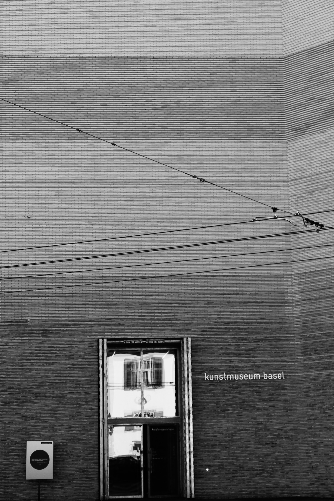
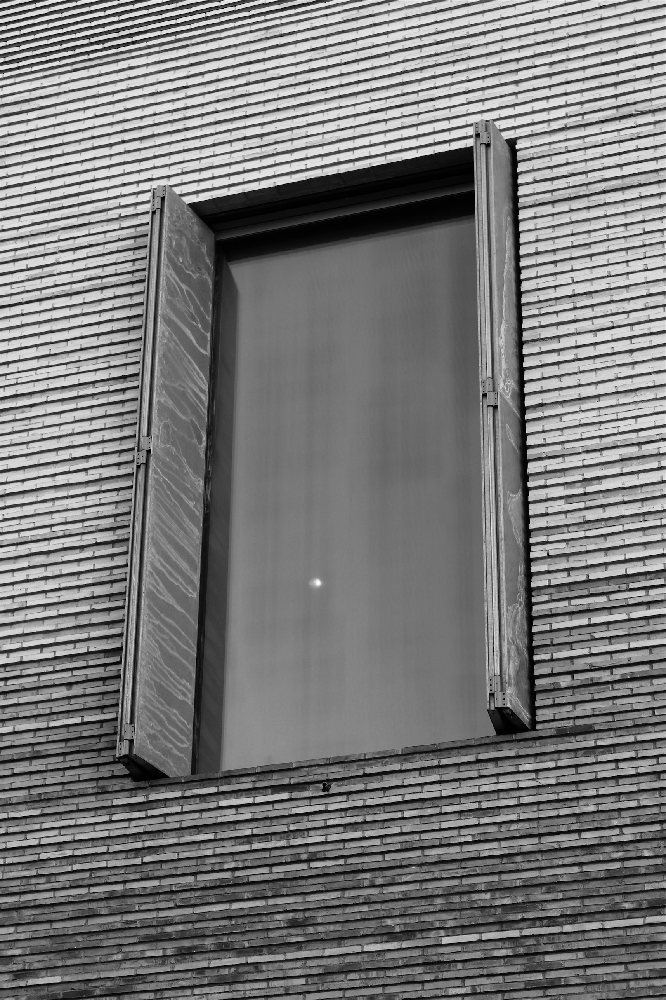

Nutzung
Der Neubau des Kunstmuseums Basel, entworfen von Christen und Gantenbein und im April 2016 eröffnet, dient als Erweiterung des Kunstmuseum-Hauptbaus und wird vor allem für Sonderausstellungen und Sammlungspräsentationen genutzt. Somit dient er sowohl als Ausstellungsort für wechselnde Themen als auch zur Präsentation der ständigen Sammlungen, wodurch der Neubau die Funktion des Museums gut ergänzt und erweitert. Der Neubau ist mit dem Hauptbau unterirdisch verbunden, und durch seine zentrale Lage im städtischen Umfeld fügt sich der Neubau harmonisch in das Zentrum Basels ein. Damit stärkt er die gesellschaftliche Rolle des Museums als Ort der Begegnung, des Austauschs und der kulturellen Bildung [16] [17].

Nachhaltigkeit
Der Neubau des Kunstmuseums Basel setzt gezielt auf Nachhaltigkeit in ökologischer, ökonomischer und sozialer Hinsicht.
Ökologisch wurde das Gebäude energieeffizient geplant. Es ist an das Basler Fernwärmenetz angeschlossen und nutzt freie Kühlung sowie Wärmerückgewinnungssysteme mit Sorptionsrädern, um den Energieverbrauch und CO2 zu minimieren. Eine LED-Fassadenbeleuchtung reduziert den Strombedarf, während das ausgeklügelte Lüftungs- und Klimakonzept eine konstante Temperatur- und Feuchtebalance sicherstellt. Dies ist entscheidend für den Schutz empfindlicher Kunstwerke und ein angenehmes Raumklima [18] [19].
Ökonomisch zeigt sich Nachhaltigkeit darin, dass der Neubau langfristig flexibel genutzt werden kann. Zudem standen bei der Planung auch langfristige Betriebseffizienz und niedrige Wartungskosten im Vordergrund. Durch thermisch aktivierte Böden, optimierte Lüftungssysteme und langlebige, robuste Materialien wurde ein wirtschaftlich nachhaltiges Gebäude gewährleistet. So bleibt das Museum auch in Zukunft finanziell und ressourcenschonend [18] [19].
Als Erweiterung eines zentralen Kunstortes trägt der Neubau wesentlich zur kulturellen Teilhabe in Basel bei. Er bietet neue Räume für Austausch, Bildung und Inspiration und stärkt so die Rolle des Museums als sozialer Treffpunkt innerhalb der Stadt. Zudem ist der Neubau unterirdisch mit dem Haupthaus des Kunstmuseums verbunden. Es wurde auch darauf geachtet, dass es barrierefrei gebaut wird. Somit können auch beeinträchtigte Menschen das Museum bestaunen [18] [20].
Architektonische Bedeutung
Der Neubau hat einige architektonische Besonderheiten, wie die silbergraue Fassade aus Beton, in deren Fugen LED-Streifen eingebaut wurden. Dadurch erhält das Gebäude trotz seiner Massivität eine leichte, fast schwebende Wirkung. Das Zusammenspiel von Licht und Stein verleiht dem Bau eine dynamische und flüchtige Erscheinung, als würde das Licht aus dem Inneren des Bauwerks hervorscheinen. Die Ecke des Neubaus ist absichtlich zurückgesetzt und nimmt die Form der alten Ecke des Hauptgebäudes auf. Gleichzeitig öffnet sie sich zur Strassenkreuzung und schafft somit einen einladenden Vorplatz. Dadurch wirken Alt- und Neugebäude wie ein harmonisches Ganzes im Zentrum von Basel.
Im Inneren prägen grosszügige, eher zurückhaltend gestaltete Ausstellungsräume und eine imposante zentrale Treppe das Haus, die über ein grosses, rundes Oberlicht belichtet wird. Die Räume sind bewusst ruhig, klar proportioniert und mit zeitlosen Materialien gebaut worden, damit die Kunst im Mittelpunkt steht. Insgesamt entsteht ein Kontrast zwischen der Schwere des Gebäudes und der Bewegung des Lichts, wodurch der Neubau zu einem modernen, aber dennoch dezenten Gegenstück zum Haupthaus des Kunstmuseums wird [16] [18].
Zudem ist der Neubau mitten im Verkehr entstanden und dadurch sehr gut mit öffentlichen Verkehrsmitteln, zu Fuss oder mit dem Fahrrad erreichbar.
